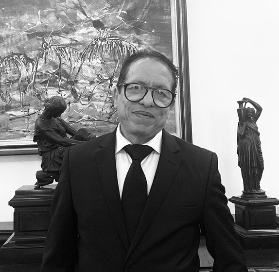
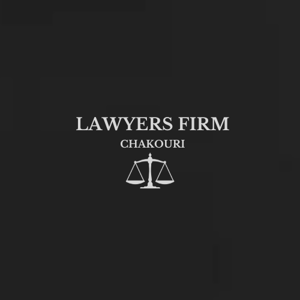

Sobre el despacho
Maître Chakouri Belkacem está especializado en derecho mercantil, derecho bancario, derecho de seguros, derecho comercial y derecho de contratos y, de forma más general, asiste a sus clientes en materia de redacción de contratos, joint ventures entre sociedades, derecho inmobiliario, derecho penal y derecho de familia, así como en derecho laboral y defensa penal, e interviene en el ámbito del derecho de la competencia y de los litigios mercantiles.
Concluyó unos brillantes estudios (número uno de su promoción) de Ciencias Jurídicas y Ciencias Políticas en Francia y en Canadá, y es perfectamente trilingüe.
Se hizo cargo del despacho en 1994 (Toque 1594) y desarrolló su actividad a nivel local, interviniendo en todo Marruecos y asumiendo la defensa de los intereses de grupos extranjeros, y a nivel internacional, estableciendo una alianza (Co-operation and Alliance Agreement) con la «Shanghai Landing Law Firm», que cuenta con más de 700 colaboradores, e interviniendo en el extranjero en asuntos relativos a grandes obras de ingeniería civil (PPP/BOT) y a la celebración de contratos de colaboración entre sociedades, así como en el ámbito de la salud.
El despacho Chakouri ha tejido una red de abogados a escala internacional, en América, Canadá, Europa, el Magreb y el África subsahariana, así como en la India y en China.
El despacho ha sido distinguido internacionalmente en varias ocasiones y está referenciado por la calidad de su práctica. El despacho es también miembro de la A.E.A.
El despacho CHAKOURI LAWYERS FIRM ha recibido varias distinciones internacionales al ser designado entre los mejores abogados de Marruecos por la calidad de su práctica en derecho mercantil, litigios y arbitraje en los años 2017, 2018 y 2019, y en litigios y arbitrajes internacionales en el año 2020.

Para concluir, Maître Belkacem CHAKOURI concede una enorme importancia a las relaciones humanas, lo que se traduce, en el ejercicio de sus funciones, en el rigor y los esfuerzos que despliega para ganar sus pleitos, así como en su humildad y su sencillez, que hacen que los clientes establezcan fácilmente un vínculo con él, ya que explica el derecho y lo pone al alcance de sus clientes, con los que mantiene un diálogo permanente para servirles lo mejor posible.
Antes que abogados, reivindicamos unos valores personales que nos permiten cumplir nuestra misión con dignidad, independencia y probidad.

02
Nuestra visión
El despacho es un actor jurídico que goza de una gran notoriedad en su sector de actividad en Marruecos. Sus abogados prestan a sus clientes servicios jurídicos de calidad y un asesoramiento de vanguardia. El despacho ofrece asesoramiento estratégico y soluciones prácticas para permitir a su diversa clientela obtener una adecuada resolución de sus litigios y actuar con conocimiento de causa en su propio entorno en la gestión de las cuestiones jurídicas. El despacho se convierte en un socio de confianza para sus clientes al proporcionarles una asistencia jurídica de calidad, una oferta integrada y diversificada, un seguimiento normativo actualizado y una carta de valores que hace suya a través de la red internacional de abogados GESICA, de la que es el representante en Marruecos.
03